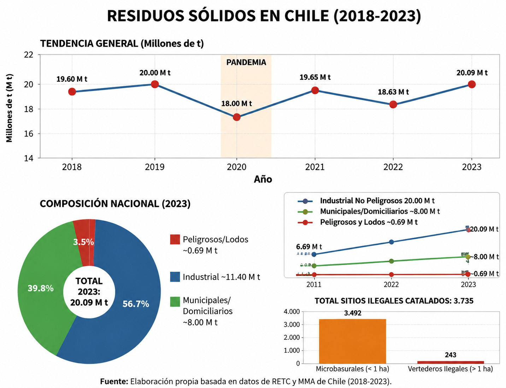

Xavier Olmos
Líder del proyectoLider, Desarrollador del guión y del logotipo del proyecto.
Proyecto para el medio ambiente
Transformando la gestión de residuos y promoviendo el reciclaje comunitario en Chile a través de la innovación social y la tecnología de BarrioLimpio.
Conoce más ➔Nosotros como grupo, seleccionamos la ODS número 12: "Producción y consumo responsables". El ODS 12 es el duodécimo objetivo de la Agenda 2030 de la ONU, enfocado en garantizar modalidades de consumo y producción sostenibles. Sus ejes principales son el uso eficiente de los recursos naturales, la reducción de la generación de desechos y la disminución del desperdicio de alimentos.
Los ODS (Objetivos de Desarrollo Sostenible) son un plan mundial de Naciones Unidas con 17 metas para acabar con la pobreza, cuidar el planeta y lograr la paz antes de 2030.

La falta de infraestructura en Chile afecta directamente la capacidad de reciclaje de los ciudadanos, ofreciendo muy pocas zonas habilitadas, basureros y centros de acopio. Esto provoca la acumulación constante de desechos en zonas urbanas como calles, parques e incluso entornos naturales.
En Chile se generan aproximadamente 19,6 millones de toneladas de residuos sólidos al año (55% industrial y 42% domiciliario). Tan solo en Santiago existen entre 4.000 y 6.000 contenedores para millones de toneladas de basura. Es una problemática crítica que requiere innovación comunitaria.


Somos EcoloChile, un equipo multidisciplinario de jóvenes estudiantes comprometidos con la transformación sustentable y la innovación social.
Nacemos de la urgencia por resolver uno de los problemas más visibles de nuestro entorno: la crisis de infraestructura en la gestión de residuos y el déficit de reciclaje en las comunas de nuestro país.

Conoce a las mentes jóvenes detrás del desarrollo de EcoloChile y BarrioLimpio.
Lider, Desarrollador del guión y del logotipo del proyecto.

Encargado de realizar por completo la página web informativa.

Encargada del la organización y crear el nombre de nuestro stand.

Encargado de realizar el prototipo de la aplicación web en "Proto.io".

Encargado de realizar la presentación del proyecto por canva.
Nuestro proyecto se basa en la cooperación por cercanía geográfica mediante geolocalización. La aplicación conecta a los usuarios bajo dos perfiles simples dentro del mapa de su comuna:
Quién es: La persona que desea reciclar pero no tiene tiempo o prefiere no salir de casa.
Su acción: Reúne sus materiales, abre la app y presiona: "Bolsa Lista".

Quién es: Jóvenes scouts, vecinos sustentables o recicladores de base de la comuna.
Su acción: Abre la app, revisa el mapa con los "puntos encendidos" y pasa a retirar.

El generador junta sus residuos y presiona el botón en la app para solicitar la recolección.

Un recolector cercano visualiza la alerta en el mapa e inicia la ruta de retiro.

Se retira la bolsa en el domicilio y se confirma la entrega ecológica exitosa.

Para el desarrollo de la página web, utilizamos Visual Studio Code como entorno de desarrollo. Construimos la estructura mediante HTML5 semántico, la capa estética mediante CSS3 con diseño responsivo, y la interactividad con JavaScript.
La maquetación del prototipo interactivo de la app fue diseñada mediante la plataforma Proto.io, complementada con asesoría para la formulación de interfaces limpias e intuitivas.


Contacto informativo: tomasmariqueo@liceovvh.cl